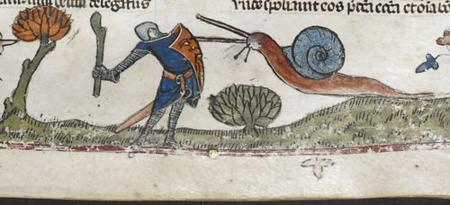
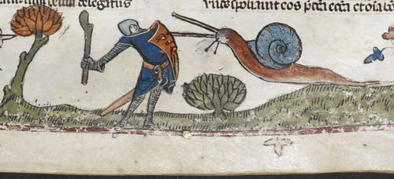

Welcome, disciple, to the lexicon of the Gherkin. Within you will find access to the
collective knowledge on the Gherkin, ally of man, enemy of Gnome. Read on to delve into their
secretive history, and learn how to live alongside our minute friends. Soon, perhaps, you may
even meet a Gherkin in the flesh.
The Gherkin is a small creature which lives deep within tall grasses and great
swaths of nature. They taught man to plow the fields and grow life from seeds.
They ride toads and frogs as men ride steeds, and oft depicted in combat with creatures
such as snails. This is, in fact, the origin of Byzantine era paintings of warriors
battling snails, though the Gherkins were poorly represented as many artists
commissioned could not see a Gherkin. They were likely told the Gherkin resembled a
'very small man'.


A common misconception about the Gnome is gained from the common garden gnome. Why,
indeed, should we hate a creature that we place around our gardens? Are they not an
ally to the Gherkin? They are often believed to be a protective charm.
Whilst the garden gnome is indeed a protective charm to the garden, this is not because the gnome is inherently good. The garden gnome is, in fact, taking advantage of one of the two only emotions a Gnome can feel. These being 'hate' and 'fear'. The garden gnome is a warning. A show of dominance. It exhibits to the gnomes what will certainly happen to them if they tread upon this territory. They will avoid the garden because of this, taking with them their mealy worms and other parasites.
Whilst the garden gnome is indeed a protective charm to the garden, this is not because the gnome is inherently good. The garden gnome is, in fact, taking advantage of one of the two only emotions a Gnome can feel. These being 'hate' and 'fear'. The garden gnome is a warning. A show of dominance. It exhibits to the gnomes what will certainly happen to them if they tread upon this territory. They will avoid the garden because of this, taking with them their mealy worms and other parasites.